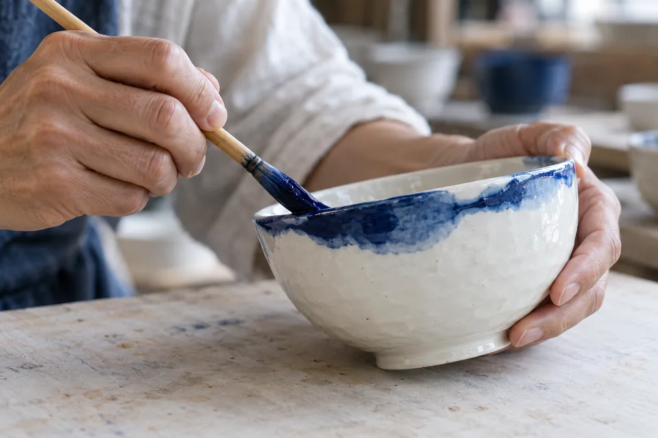

THE HAND / TOBE
白磁に、藍を。
土をかたちに、かたちを暮らしに。手でつくる文化は、毎日のすぐそばにあります。

AI生成イメージ。実在のつくり手・作品を表す写真ではありません。
01砥部町
FIELD NOTES
砥部町
手ざわりの文化
THE BACKGROUND
出会いの、
その手前で。
砥部焼の特徴は、清らかな白磁に映える藍の絵付け。少し厚みのある形と丈夫さも、暮らしの器として親しまれる理由です。
器を見たとき、色だけでなく、縁の厚みや持ちやすさにも目を向けてみる。つくり手の工夫に気付くことも、文化との出会いです。
このページでは、工芸の背景を読むことから、手を動かす催しの掲載例へ進めます。実際の開催内容は今後の発表をご確認ください。
A SMALL DIGITAL WORKSHOP
あなたの藍を、
一筆。
白磁と藍に着想を得た、デジタルの絵付け。
図形を重ねるか、自分で線を描いてみてください。
砥部焼の製作工程を再現するものではありません。つくった図形は、このブラウザー内に保存します。
図形を加えるボタンはキーボードでも操作できます。「自分で描く」を選ぶと、器の中に線を描けます。
FROM STORY TO EXPERIENCE
この文化を、体験へ。
次の催しは、ページの使い方を確認するための架空の掲載例です。